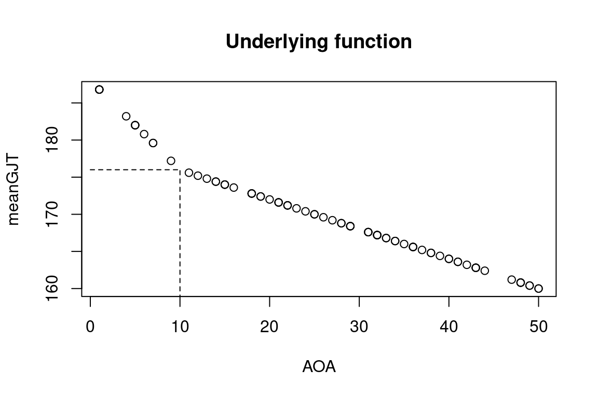
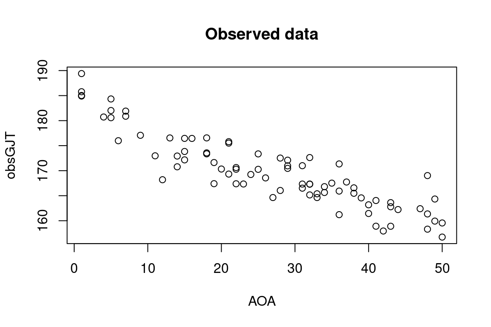
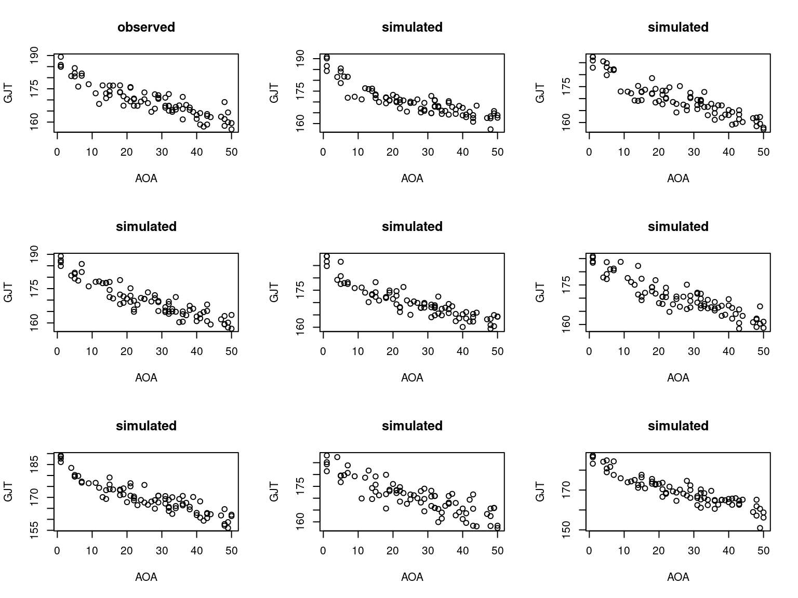
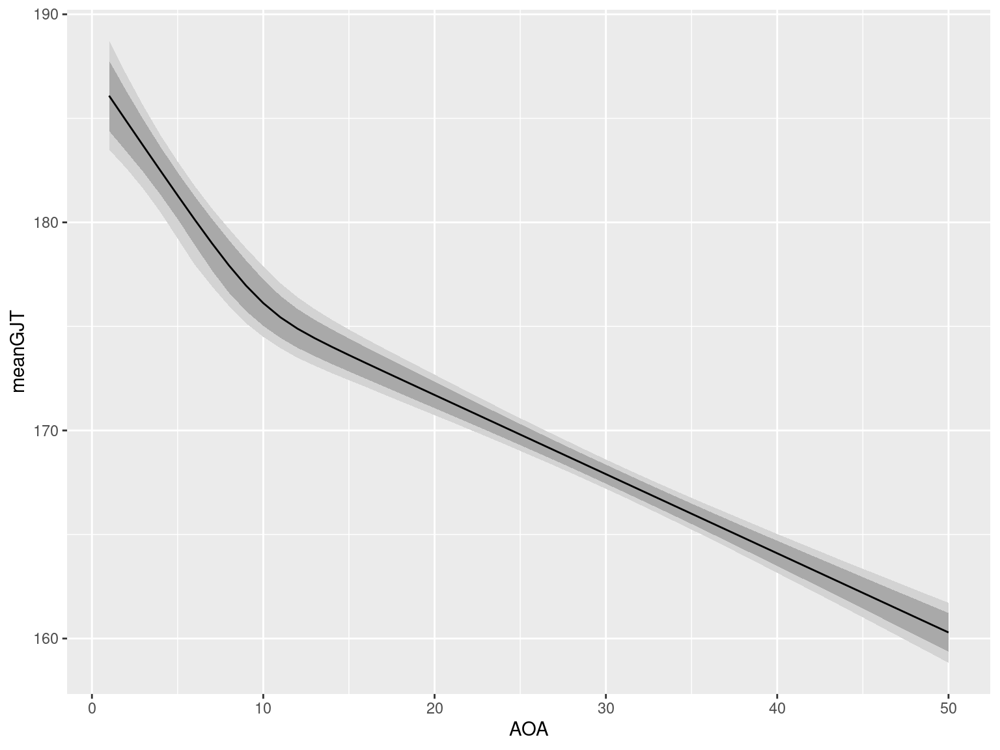
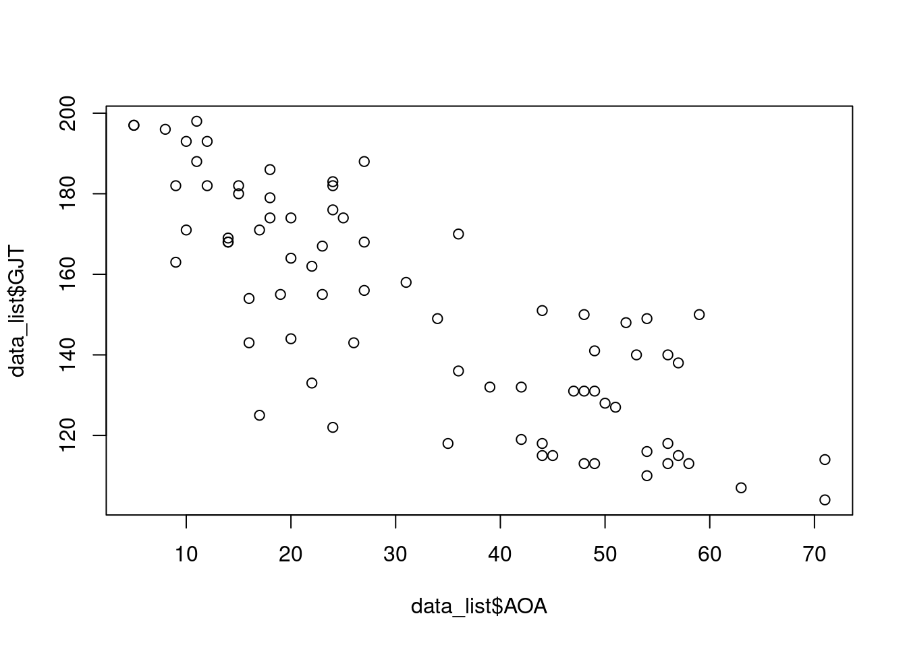
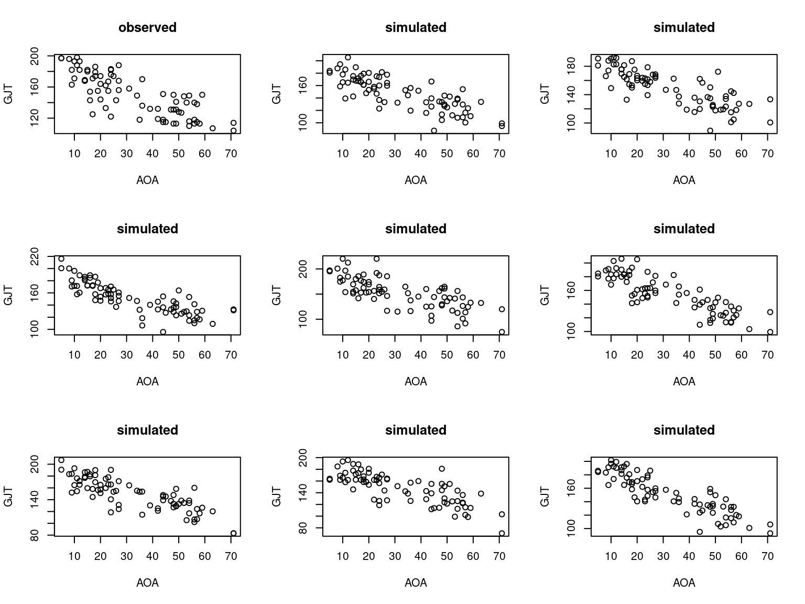
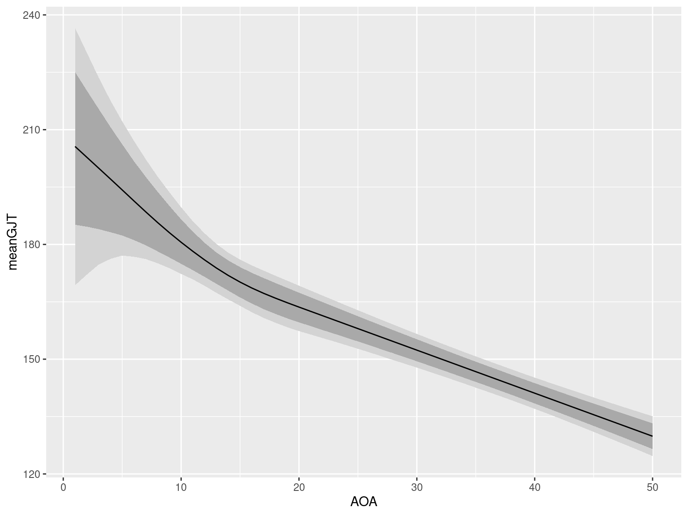

# Load rstan package
library(rstan)
# Avoid unnecessary recompiling
rstan_options(auto_write = TRUE)
# optional: Distribute work over multiple CPU cores
options(mc.cores = parallel::detectCores())Baby steps in Bayes: Piecewise regression
breakpoint regression
non-linearities
Bayesian statistics
Inspired by Richard McElreath’s excellent book Statistical rethinking: A Bayesian course with examples in R and Stan, I’ve started dabbling in Bayesian statistics. In essence, Bayesian statistics is an approach to statistical inference in which the analyst specifies a generative model for the data (i.e., an equation that describes the factors they suspect gave rise to the data) as well as (possibly vague) relevant information or beliefs that are external to the data proper. This information or these beliefs are then adjusted in light of the data observed.
I’m hardly an expert in Bayesian statistics (or the more commonly encountered ‘orthodox’ or ‘frequentist’ statistics, for that matter), but I’d like to understand it better – not only conceptually, but also in terms of how the statistical model should be specified. While quite a few statisticians and methodologists tout Bayesian statistics for a variety of reasons, my interest is primarily piqued by the prospect of being able to tackle problems that would be impossible or at least awkward to tackle with the tools I’m pretty comfortable with at the moment.
In order to gain some familiarity with Bayesian statistics, I plan to set myself a couple of problems and track my efforts in solving them here in a Dear diary fashion. Perhaps someone else finds them useful, too.
The first problem that I’ll tackle is fitting a regression model in which the relationship between the predictor and the outcome may contain a breakpoint at one unknown predictor value. One domain in which such models are useful is in testing hypotheses that claim that the relationship between the age of onset of second language acquisition (AOA) and the level of ultimate attainment in that second language flattens after a certain age (typically puberty). It’s possible to fit frequentist breakpoint models, but estimating the breakpoint age is a bit cumbersome (see blog post Calibrating p-values in ‘flexible’ piecewise regression models). But in a Bayesian approach, it should be possible to estimate both the regression parameters as well as the breakpoint itself in the same model. That’s what I’ll try here.
Software
Apart from R, you’ll need RStan. Follow the installation instructions on RStan’s GitHub page.
Once you’ve installed RStan, fire up a new R session and run these commands.
Simulating some data
I’ll analyse some real data in a minute. But I think it’s useful to analyse some data I know the true data generating mechanism of first in order to make sure that the model works as intended. The commands below generate data with properties comparable to the real data I’ll analyse in a bit.
The first graph below shows the mean outcome value (‘GJT’, i.e., L2 grammaticality judgement task result) depending on the age of onset of acquisition. As you can see, there’s a bend in the function at age 10.
# Set random seed (today's date)
RNGversion("3.5.3")
set.seed(2018-07-04)
# 80 data points
n <- 80
# Generate 'age of acquisition' data (integers between 1 and 50)
AOA <- sample(1:50, size = n, replace = TRUE)
# Set breakpoint at some plausible age
BP <- 10
# Generate average values on GJT (~ 'grammar test') outcome
meanGJT <- ifelse(AOA < BP,
176 - 1.2 * (AOA - BP),
176 - 0.4 * (AOA - BP))
plot(AOA, meanGJT, main = "Underlying function")
segments(x0 = BP, y0 = 0, y1 = 176, lty = 2)
segments(x0 = 0, x1 = BP, y0 = 176, lty = 2)
In the second graph, some random normal error has been added to these mean values; it is the data in this figure that I’ll analyse first.
# Generate observed values
error <- 3
obsGJT <- rnorm(n = n, mean = meanGJT, sd = error)
plot(AOA, obsGJT, main = "Observed data")
Specifying the model
While there exist some (truly excellent) front-end interfaces for fitting Bayesian models (e.g., brms), I’ll specify the model in RStan proper. This is considerably more involved than writing out a model using R’s lm() function, but this added complexity buys you something in terms of flexibility.
A Stan model specification has three required blocks.
data
This is where you specify what the input data looks like. Below I specified that the model should accept two variables (GJT and AOA) both with the same number of observations (N). Unlike lm(), stan() accepts non-rectangular data (e.g., variables with different lengths), so you need to prespecify the number of observations per variable.
parameters
The model parameters you want to estimate. A breakpoint regression model has five parameters:
- The breakpoint. I constrained the breakpoint to be between 1 and 20 since breakpoints beyond that range are inconsistent with any proposed theory;
- the slope of the regression before the breakpoint;
- the slope of the regression after the breakpoint;
- a constant term (‘intercept’), most easily written as the expected outcome value at the breakpoint;
- the standard deviation of the normal error. Standard deviations are always positive; this constraint is set by including
<lower = 0>in the declaration. (Incidentally, the error term doesn’t have to be normal.)
model
This is where you specify how the parameters and the data relate to each other. The assumed (and for the simulated data: correct) data generating mechanism is that the observed GJT values were drawn from a normal distribution whose mean depends on the participant’s AOA (see transformed parameters below) and the breakpoint and which has the same standard deviation everywhere.
You also have to provide so-called prior distributions for any parameters. These encode the information or beliefs you have about the parameters which you didn’t need the data for. I set the following priors:
- A truncated normal prior for the breakpoint centred at 12 and with a standard deviation of 6. The prior is truncated at 1 and at 20; this was specified in the
parametersblock. This prior essentially encodes that, for all I know, the breakpoint occurs somewhere between the ages of 1 and 20 and is slightly more likely to occur around age 10 to 14 and around ages 2 or 19. I tried specifying a uniform prior, but that didn’t work. - Normal priors centred around 0 and with standard deviations of 5 for both slope parameters. What this means is that I think it’s highly unlikely that these slopes are incredibly steep (say, a 100-point increase or decrease per additional AOA). These priors aren’t particularly informative, though: According to them, negative and positive slopes are equally likely. If you have a sufficient amount of data, such priors only have a minimal effect on the results. But when you don’t have this luxury, even such slightly informative priors may be better than none at all for keeping the inferences within reasonable bounds.
- A normal prior centred around 150 with a standard deviation of 25 for the intercept. This essentially means that I expect the average outcome at the breakpoint to lie somewhere between 100 and 200. For the real data I’ll analyse later, this assumption is reasonable enough since the data were pretty much guaranteed to be bound between 102 and 204.
- A half-normal prior starting at 0 with a standard deviation of 20 for the standard deviation of the residuals. The normal part is specified in this prior, the half part results from the constraint set in the
parametersblock. A half-normal distribution starting at 0 with a standard deviation of 20 in essence encodes the belief that the residual error will probably have a standard deviation of less than 2*20 = 40, with smaller values being more likely than large ones. If you don’t set a prior for this parameter (or any other parameter, for that matter), a uniform prior spanning to infinity is assumed. So even when you don’t specify a prior, you’re using one.
I also added two optional blocks:
transformed parameters
This block specifies derivations of model parameters, be it because they’re the actual object of inference or just because it simplifies the notation. I specified two derived parameters.
conditional_meandescribes the outcome of the regression equation without the error term for each observation:- If the participant’s AOA is before the breakpoint,
conditional_mean=intercept+slope1*AOA. - If the participant’s AOA is after the breakpoint,
conditional_mean=intercept+slope2*AOA.
- If the participant’s AOA is before the breakpoint,
slope_differenceis just the difference between the slope after and the slope before the breakpoint.
generated quantities
Here you can specify some model outputs. I specified three such outputs:
sim_GJT: Using thenormal_rng()function, I simulate new GJT data from the model for each AOA observation in the original dataset. If the model is approximately accurate, the actually observed data should look fairly similar to these simulated data points. I’ll check this later.log_lik: I won’t discuss this in this post.sim_conditional_mean: For each AOA between 1 and 50 (hence: a vector of length 50), I’ll ask the model to output what it thinks is the conditional GJT mean. This will be useful for drawing effect plots.
bp_code <- '
// You need to specify the kind of input data, incl. number of observations.
data {
int<lower=1> N; // total number of observations (integer); at least 1
real GJT[N]; // outcome variable with N elements (real-valued)
real AOA[N]; // predictor variable with N elements (real-valued)
}
// the parameters to be estimated from the data
parameters {
real intercept; // = predicted outcome at breakpoint
real slope_before; // slope before the breakpoint
real slope_after; // slope after the breakpoint
real<lower = 1, upper = 20> bp; // the breakpoint age, with some constraints
real<lower = 0> error; // standard deviation of residuals
// (always positive, hence <lower = 0>)
}
// Functions of estimated parameters.
transformed parameters{
vector[N] conditional_mean; // the estimated average GJT for each AOA observation
real slope_difference; // the difference between slope_after and slope_before
slope_difference = slope_after - slope_before;
// conditional_mean depends on whether AOA is before or after bp
for (i in 1:N) {
if (AOA[i] < bp) {
conditional_mean[i] = intercept + slope_before * (AOA[i] - bp);
} else {
conditional_mean[i] = intercept + slope_after * (AOA[i] - bp);
}
}
}
// The model itself specifies how the data are expected to have
// been generated and what the prior expectations for the model parameters are.
model {
// Set priors
intercept ~ normal(150, 25); // Average GJT at breakpoint
slope_before ~ normal(0, 5); // Slope before breakpoint
slope_after ~ normal(0, 5); // Slope after breakpoint
bp ~ normal(12, 6); // Breakpoint age, pretty wide, but somewhere in childhood/puberty
error ~ normal(0, 20); // Residual error, likely between 0 and 2*20
// How the data are expected to have been generated:
// normal distribution with mu = conditional_mean and
// std = error, estimated from data.
for (i in 1:N) {
GJT[i] ~ normal(conditional_mean[i], error);
}
}
generated quantities {
vector[N] sim_GJT; // Simulate new data using estimated parameters.
vector[N] log_lik; // Useful for model comparisons; not done here.
vector[50] sim_conditional_mean; // Useful for plotting.
// Compute conditional means for AOAs between 1 and 50.
for (i in 1:50) {
if (i < bp) {
sim_conditional_mean[i] = intercept + slope_before * (i - bp);
} else {
sim_conditional_mean[i] = intercept + slope_after * (i - bp);
}
}
for (i in 1:N) {
sim_GJT[i] = normal_rng(conditional_mean[i], error);
log_lik[i] = normal_lpdf(GJT[i] | conditional_mean[i], error);
}
}
'Running the model
To fit the model, first put the input data in a list. Then supply this list and the model code to the stan() function. The stan() function prints a lot of output to the console, which I didn’t reproduce here. Unless you receive genuine warnings or error (i.e., red text), everything’s fine.
data_list <- list(
AOA = AOA,
GJT = obsGJT,
N = length(AOA)
)
fit_bp_sim <- stan(model_code = bp_code,
data = data_list,
iter = 8000)Inspecting the model
Model summary
A summary with the parameter estimates and their uncertainties can be generated using the print() function.
print(fit_bp_sim,
par = c("intercept", "bp", "slope_before", "slope_after", "slope_difference", "error"))Inference for Stan model: anon_model.
4 chains, each with iter=8000; warmup=4000; thin=1;
post-warmup draws per chain=4000, total post-warmup draws=16000.
mean se_mean sd 2.5% 25% 50% 75% 97.5% n_eff
intercept 175.41 0.02 1.36 172.99 174.53 175.32 176.20 178.36 4271
bp 10.31 0.03 2.32 5.73 8.91 10.33 11.69 15.11 4639
slope_before -1.21 0.01 0.36 -1.97 -1.35 -1.16 -1.00 -0.74 3927
slope_after -0.38 0.00 0.03 -0.44 -0.40 -0.38 -0.36 -0.32 6081
slope_difference 0.83 0.01 0.36 0.34 0.62 0.78 0.97 1.57 4119
error 2.92 0.00 0.24 2.49 2.75 2.90 3.07 3.44 8623
Rhat
intercept 1
bp 1
slope_before 1
slope_after 1
slope_difference 1
error 1
Samples were drawn using NUTS(diag_e) at Sun Aug 6 15:33:51 2023.
For each parameter, n_eff is a crude measure of effective sample size,
and Rhat is the potential scale reduction factor on split chains (at
convergence, Rhat=1).For each parameter, the mean column contains the mean estimate of that parameter, whereas the 50% column contains its median estimate. The sd column shows the standard deviation of the parameter estimates; this corresponds to the parameter estimate’s standard error. The 2.5%, 25%, 75% and 97.5% columns contain the respective percentiles of the distribution of the parameter estimates. So the average estimated breakpoint (bp) occurs somewhere between age 10 and 11, with 95% of the estimates contained in an interval between roughly 6 and 15 years. Similarly, the average estimated slope before the breakpoint is about -1.2 with a 95% ‘credibility’ interval from -1.98 to -0.75, and so on. The parameter estimates, then, are neatly centred around their true values, suggesting that the model does what it’s supposed to do.
Posterior predictive checks
If the model is any good, data simulated from it should be pretty similar to the data actually observed. In the generated quantities block, I let the model output such simulated data (sim_GJT). Using the shinystan package, we can perform some ‘posterior predictive checks’:
shinystan::launch_shinystan(fit_bp_sim)Click ‘Diagnose’ > ‘PPcheck’. Under ‘Select y (vector of observations)’, pick obsGJT (the simulated data analysed above). Under ‘Parameter/generated quantity from model’, pick sim_GJT (the additional simulated data generated in the model code). Then click on ‘Distributions of observed data vs replications’ and ‘Distributions of test statistics’ to check if the properties of the simulated data correspond to those of the real data.
You can also take this a step further and check whether the model is able to generate scatterplots similar to the one in Figure 2. If the following doesn’t make any immediate sense, please refer to the blog post Checking model assumptions without getting paranoid, because the logic is pretty similar.
First extract some vectors of simulated data from the model output:
# rstan's 'extract' is likely to conflict with another function
# called 'extract', so specify the package, too.
simulated_data <- rstan::extract(fit_bp_sim)$sim_GJT
# simulated_data is a matrix with 4000 rows and 80 columns.
# For the plot, I select 8 rows at random:
simulated_data <- simulated_data[sample(1:4000, 8), ]Then plot both the observed vectors and the simulated vectors:
par(mfrow = c(3, 3))
# Plot the observed data
plot(data_list$AOA, data_list$GJT,
xlab = "AOA", ylab = "GJT",
main = "observed")
# Plot the simulated data
for (i in 1:8) {
plot(data_list$AOA, simulated_data[i, ],
xlab = "AOA", ylab = "GJT",
main = "simulated")
}
par(mfrow = c(1, 1))The simulated data look pretty much identical to the observed data, again demonstrating that the model is doing a pretty good job of learning the patterns in the data. This isn’t surprising, since I knew how the data were generated and constructed the model correspondingly. But it’s reassuring.
(Incidentally, I’m sure it’s possible to generate lineups more similar to the ones in that previous blog post, but this blog post is long as it is already.)
Effect plot
To visualise the model, you can draw an effect plot showing the average estimated relationship between AOA and GJT as well as the uncertainty about this relationship. To this end, I had the model output vectors of the fitted conditional means for AOAs 1 through 50 (sim_conditional_mean). With the commands below, I extract these vectors and then compute their mean values as well as some percentiles at each AOA.
sim_conditional_means <- rstan::extract(fit_bp_sim)$sim_conditional_mean
df_sim_cond_means <- data.frame(
AOA = 1:50,
meanGJT = apply(sim_conditional_means, 2, mean),
lo80GJT = apply(sim_conditional_means, 2, quantile, 0.10),
hi80GJT = apply(sim_conditional_means, 2, quantile, 0.90),
lo95GJT = apply(sim_conditional_means, 2, quantile, 0.025),
hi95GJT = apply(sim_conditional_means, 2, quantile, 0.975)
)
head(df_sim_cond_means) AOA meanGJT lo80GJT hi80GJT lo95GJT hi95GJT
1 1 186.0867 184.3968 187.7745 183.4985 188.7348
2 2 184.8770 183.4161 186.3232 182.6086 187.1155
3 3 183.6743 182.4180 184.9381 181.6091 185.5990
4 4 182.4817 181.3312 183.6296 180.4895 184.1939
5 5 181.2997 180.1643 182.4048 179.2258 182.9274
6 6 180.1329 178.9212 181.2531 177.9611 181.7475These mean values and percentiles can then be plotted as follows; the black line shows the average regression line, the light grey ribbon its 95% credibility region, and the dark grey ribbon its 80% credibility region.
library(ggplot2)
ggplot(df_sim_cond_means,
aes(x = AOA,
y = meanGJT)) +
geom_ribbon(aes(ymin = lo95GJT,
ymax = hi95GJT),
fill = "lightgrey") +
geom_ribbon(aes(ymin = lo80GJT,
ymax = hi80GJT),
fill = "darkgrey") +
geom_line()
And now for real
Let’s now analyse some real data using the same model. These data stem from a study by DeKeyser et al. (2010).
d <- read.csv("http://homeweb.unifr.ch/VanhoveJ/Pub/papers/CPH/DeKeyser2010NorthAmerica.csv")
data_list <- list(
AOA = d$AOA,
GJT = d$GJT,
N = nrow(d)
)
plot(data_list$AOA, data_list$GJT)
Let’s fit the model:
fit_bp <- stan(model_code = bp_code, data = data_list, iter = 8000, refresh = 0)And output summary statistics:
print(fit_bp,
par = c("intercept", "bp", "slope_before", "slope_after", "slope_difference", "error"))Inference for Stan model: anon_model.
4 chains, each with iter=8000; warmup=4000; thin=1;
post-warmup draws per chain=4000, total post-warmup draws=16000.
mean se_mean sd 2.5% 25% 50% 75% 97.5% n_eff
intercept 172.27 0.13 7.40 159.77 166.71 171.41 177.45 187.49 3385
bp 12.50 0.07 4.30 3.32 9.40 13.29 15.82 19.25 3436
slope_before -2.83 0.04 2.38 -7.65 -3.85 -2.85 -1.98 3.29 3759
slope_after -1.13 0.00 0.13 -1.37 -1.22 -1.13 -1.04 -0.86 5177
slope_difference 1.70 0.04 2.41 -4.45 0.83 1.76 2.77 6.51 3739
error 16.38 0.01 1.37 13.94 15.42 16.30 17.24 19.32 8827
Rhat
intercept 1
bp 1
slope_before 1
slope_after 1
slope_difference 1
error 1
Samples were drawn using NUTS(diag_e) at Sun Aug 6 15:35:52 2023.
For each parameter, n_eff is a crude measure of effective sample size,
and Rhat is the potential scale reduction factor on split chains (at
convergence, Rhat=1).The model doesn’t seem to have learnt a whole lot about the position of the breakpoint: the 95% credibility interval ranges from age 3 till age 19. Furthermore, it doesn’t really seem to know about what happens at this breakpoint: the 95% CrI for the difference between the after and the before slopes ranges from about -5.1 till 6.4.
We ought to perform some posterior predictive checks to make sure the model makes sense, though:
# rstan's 'extract' is likely to conflict with another function
# called 'extract', so specify the package, too.
simulated_data <- rstan::extract(fit_bp)$sim_GJT
# simulated_data is a matrix with 4000 rows and 80 columns.
# For the plot, I select 8 rows at random:
simulated_data <- simulated_data[sample(1:4000, 8), ]par(mfrow = c(3, 3))
# Plot the observed data
plot(data_list$AOA, data_list$GJT,
xlab = "AOA", ylab = "GJT",
main = "observed")
# Plot the simulated data
for (i in 1:8) {
plot(data_list$AOA, simulated_data[i, ],
xlab = "AOA", ylab = "GJT",
main = "simulated")
}
par(mfrow = c(1, 1))Figure 6 suggests that it may be possible to improve the model since the simulated data display some patterns that would have been impossible to observe in the actual study (viz., GJT values larger than 204). But this should suffice for now.
As a final step, we can draw an effect plot as before:
sim_conditional_means <- extract(fit_bp)$sim_conditional_mean
df_sim_cond_means <- data.frame(
AOA = 1:50,
meanGJT = apply(sim_conditional_means, 2, mean),
lo80GJT = apply(sim_conditional_means, 2, quantile, 0.10),
hi80GJT = apply(sim_conditional_means, 2, quantile, 0.90),
lo95GJT = apply(sim_conditional_means, 2, quantile, 0.025),
hi95GJT = apply(sim_conditional_means, 2, quantile, 0.975)
)ggplot(df_sim_cond_means,
aes(x = AOA,
y = meanGJT)) +
geom_ribbon(aes(ymin = lo95GJT,
ymax = hi95GJT),
fill = "lightgrey") +
geom_ribbon(aes(ymin = lo80GJT,
ymax = hi80GJT),
fill = "darkgrey") +
geom_line()
Given the uncertainty about the position of the breakpoint and what happens to the regression line at that breakpoint, it would make sense to fit a linear regression model to these data and then estimate how much allowing for a breakpoint actually buys us in terms of fit to the data. This is why I had the model generate log_lik values, too, but I’ll discuss those another time.
Software versions
Please note that I reran the code on this page on August 6, 2023.
devtools::session_info()─ Session info ───────────────────────────────────────────────────────────────
setting value
version R version 4.3.1 (2023-06-16)
os Ubuntu 22.04.2 LTS
system x86_64, linux-gnu
ui X11
language en_US
collate en_US.UTF-8
ctype en_US.UTF-8
tz Europe/Zurich
date 2023-08-06
pandoc 3.1.1 @ /usr/lib/rstudio/resources/app/bin/quarto/bin/tools/ (via rmarkdown)
─ Packages ───────────────────────────────────────────────────────────────────
package * version date (UTC) lib source
cachem 1.0.6 2021-08-19 [2] CRAN (R 4.2.0)
callr 3.7.3 2022-11-02 [1] CRAN (R 4.3.1)
cli 3.6.1 2023-03-23 [1] CRAN (R 4.3.0)
codetools 0.2-19 2023-02-01 [4] CRAN (R 4.2.2)
colorspace 2.1-0 2023-01-23 [1] CRAN (R 4.3.0)
crayon 1.5.2 2022-09-29 [1] CRAN (R 4.3.1)
curl 5.0.1 2023-06-07 [1] CRAN (R 4.3.1)
devtools 2.4.5 2022-10-11 [1] CRAN (R 4.3.1)
digest 0.6.29 2021-12-01 [2] CRAN (R 4.2.0)
dplyr 1.1.2 2023-04-20 [1] CRAN (R 4.3.0)
ellipsis 0.3.2 2021-04-29 [2] CRAN (R 4.2.0)
evaluate 0.15 2022-02-18 [2] CRAN (R 4.2.0)
fansi 1.0.4 2023-01-22 [1] CRAN (R 4.3.1)
fastmap 1.1.0 2021-01-25 [2] CRAN (R 4.2.0)
fs 1.5.2 2021-12-08 [2] CRAN (R 4.2.0)
generics 0.1.3 2022-07-05 [1] CRAN (R 4.3.0)
ggplot2 * 3.4.2 2023-04-03 [1] CRAN (R 4.3.0)
glue 1.6.2 2022-02-24 [2] CRAN (R 4.2.0)
gridExtra 2.3 2017-09-09 [1] CRAN (R 4.3.0)
gtable 0.3.3 2023-03-21 [1] CRAN (R 4.3.0)
htmltools 0.5.5 2023-03-23 [1] CRAN (R 4.3.0)
htmlwidgets 1.6.2 2023-03-17 [1] CRAN (R 4.3.1)
httpuv 1.6.11 2023-05-11 [1] CRAN (R 4.3.1)
inline 0.3.19 2021-05-31 [1] CRAN (R 4.3.1)
jsonlite 1.8.7 2023-06-29 [1] CRAN (R 4.3.1)
knitr 1.39 2022-04-26 [2] CRAN (R 4.2.0)
later 1.3.1 2023-05-02 [1] CRAN (R 4.3.1)
lifecycle 1.0.3 2022-10-07 [1] CRAN (R 4.3.0)
loo 2.6.0 2023-03-31 [1] CRAN (R 4.3.1)
magrittr 2.0.3 2022-03-30 [1] CRAN (R 4.3.0)
matrixStats 1.0.0 2023-06-02 [1] CRAN (R 4.3.1)
memoise 2.0.1 2021-11-26 [2] CRAN (R 4.2.0)
mime 0.10 2021-02-13 [2] CRAN (R 4.0.2)
miniUI 0.1.1.1 2018-05-18 [1] CRAN (R 4.3.1)
munsell 0.5.0 2018-06-12 [1] CRAN (R 4.3.0)
pillar 1.9.0 2023-03-22 [1] CRAN (R 4.3.0)
pkgbuild 1.4.2 2023-06-26 [1] CRAN (R 4.3.1)
pkgconfig 2.0.3 2019-09-22 [2] CRAN (R 4.2.0)
pkgload 1.3.2.1 2023-07-08 [1] CRAN (R 4.3.1)
prettyunits 1.1.1 2020-01-24 [2] CRAN (R 4.2.0)
processx 3.8.2 2023-06-30 [1] CRAN (R 4.3.1)
profvis 0.3.8 2023-05-02 [1] CRAN (R 4.3.1)
promises 1.2.0.1 2021-02-11 [1] CRAN (R 4.3.1)
ps 1.7.5 2023-04-18 [1] CRAN (R 4.3.1)
purrr 1.0.1 2023-01-10 [1] CRAN (R 4.3.0)
R6 2.5.1 2021-08-19 [2] CRAN (R 4.2.0)
Rcpp 1.0.11 2023-07-06 [1] CRAN (R 4.3.1)
RcppParallel 5.1.7 2023-02-27 [1] CRAN (R 4.3.1)
remotes 2.4.2 2021-11-30 [2] CRAN (R 4.2.0)
rlang 1.1.1 2023-04-28 [1] CRAN (R 4.3.0)
rmarkdown 2.21 2023-03-26 [1] CRAN (R 4.3.0)
rstan * 2.26.22 2023-08-01 [1] local
rstudioapi 0.14 2022-08-22 [1] CRAN (R 4.3.0)
scales 1.2.1 2022-08-20 [1] CRAN (R 4.3.0)
sessioninfo 1.2.2 2021-12-06 [2] CRAN (R 4.2.0)
shiny 1.7.4.1 2023-07-06 [1] CRAN (R 4.3.1)
StanHeaders * 2.26.27 2023-06-14 [1] CRAN (R 4.3.1)
stringi 1.7.12 2023-01-11 [1] CRAN (R 4.3.1)
stringr 1.5.0 2022-12-02 [1] CRAN (R 4.3.0)
tibble 3.2.1 2023-03-20 [1] CRAN (R 4.3.0)
tidyselect 1.2.0 2022-10-10 [1] CRAN (R 4.3.0)
urlchecker 1.0.1 2021-11-30 [1] CRAN (R 4.3.1)
usethis 2.2.2 2023-07-06 [1] CRAN (R 4.3.1)
utf8 1.2.3 2023-01-31 [1] CRAN (R 4.3.1)
V8 4.3.0 2023-04-08 [1] CRAN (R 4.3.0)
vctrs 0.6.3 2023-06-14 [1] CRAN (R 4.3.0)
withr 2.5.0 2022-03-03 [2] CRAN (R 4.2.0)
xfun 0.39 2023-04-20 [1] CRAN (R 4.3.0)
xtable 1.8-4 2019-04-21 [1] CRAN (R 4.3.1)
yaml 2.3.5 2022-02-21 [2] CRAN (R 4.2.0)
[1] /home/jan/R/x86_64-pc-linux-gnu-library/4.3
[2] /usr/local/lib/R/site-library
[3] /usr/lib/R/site-library
[4] /usr/lib/R/library
──────────────────────────────────────────────────────────────────────────────